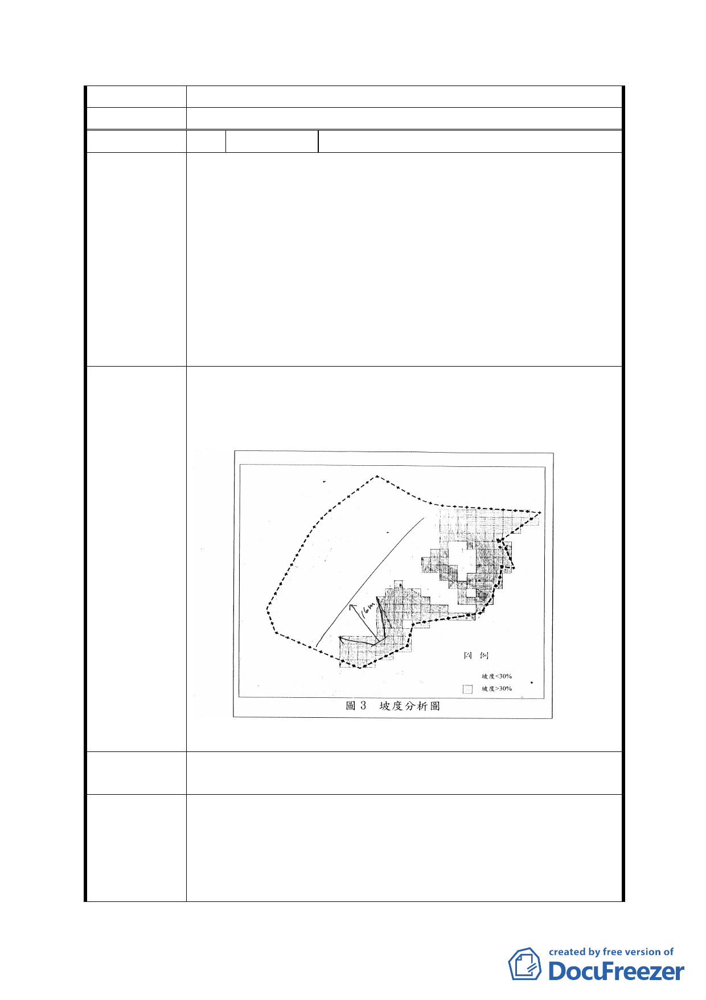

餘土地坡度超過 30％，並無適合規模土地再劃設住宅區。
委員會決議 同意依「市府修正後回應說明」辦理
編 號 2 陳情人 楊仁住
1. 原計畫為學校預定地，自87年得以贖回該區土地，87-97
年十年間交易轉讓之價格，均以「公共設施用地」為依
據，市府亦以「變更原則以作為公共設施為優先」答覆
民眾，今驟然規劃為保護區部分，猶如無償強取，地主
陳情理由
損失慘重，否定「信賴保護原則」，政府似乎有令民眾誤
入陷阱之嫌，規劃應兼顧減輕地主損失為念。
2. 民國58年是以軍事整備為優先的時代，當時能規劃出軍
事營區變更為學校用地，40年後的今天卻是以軍事營區
為規劃基礎，周邊為它淨空，簡直是時空錯置，時代嚴
重倒退。
1-1 現規劃為保護區部分擴編為公園景觀區，辦理徵收。
1-2 73地號平坦部分將擋土牆後移少許，不足16M 縱深，以
變更為住3用地，減輕地主損失。(如下圖)
建議辦法
2.另覓軍事營區，區域整體重新規劃，以利長期發展。
第五次專案小組
審查結論
同編號 1
1.本計畫案計畫原則「（一）公共設施用地仍以提供作為公
市府修正後
回應說明
共使用為原則」係針對計畫區內平坦、非坡地之地區，至
於坡度陡峭之山坡地應依本案計畫原則「（二）坡度陡峭
之山坡地，基於生態維護及水土保持，變更為保護區」辦
理。
- 15 -